A FIRST VISIT / 第一次来江门
初来江门，
先找到你的那一站。
从老城骑楼到田野碉楼，从陈皮茶香到湿地鸟鸣。选一两个片区，把周末留给真正想看的风景。
资料更新：2026.10.16 · 适合 1—2 天初访
景点、美食与路线，按你想去的片区慢慢选。
 照片暂未加载，可继续阅读介绍。
照片暂未加载，可继续阅读介绍。先选一个片区，再决定去哪。
江门的精彩分布在不同区市。只有一个周末，不必把所有地方一次走完。
七个区市，20 处出发的理由。
第一次来，先选一两个片区。点开提示看怎样安排，也可以把心动的地方加入想去清单。
暂时没有匹配的景点，试试其他地区或重置筛选。
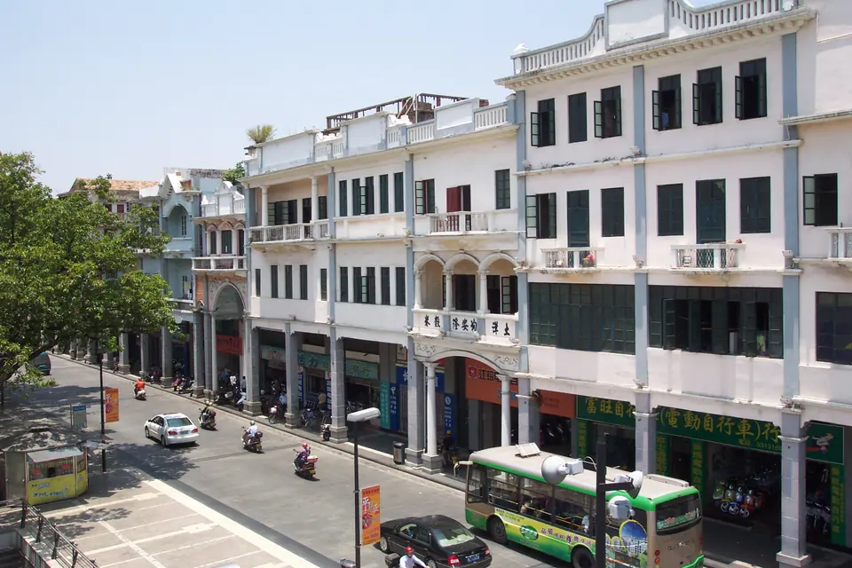
照片暂未加载，可继续阅读介绍。01蓬江
长堤历史文化街区 · 三十三墟街
骑楼街巷小吃
从蓬江河畔的骑楼与三十三墟街出发，可以读到江门商埠与市井生活的痕迹。
- 行程搭配
- 半天慢逛，含启明里
这一带，尝一口什么 ＋
出发提示与资料来源
编辑建议 · 第一次来，适合与启明里连成一段步行行程；看建筑、找小吃，少安排跨区来回。
行前确认 · 商户、展馆与集市各有安排；节庆市集不能默认每天营业。
摄影/供图：长夜无风 · 原照片 ↗ · CC BY-SA 3.0 ↗。等比缩小、WebP压缩；网页展示可能裁切。衍生照片沿用所列许可。照片记录拍摄时的面貌。
 照片暂未加载，可继续阅读介绍。
照片暂未加载，可继续阅读介绍。02蓬江
启明里
侨屋非遗咖啡
长堤历史文化街区东段的百年侨居片区，房屋结合岭南与西方建筑元素，巷子以在地故事与非遗为主题。
- 行程搭配
- 与长堤同一半天
这一带，尝一口什么 ＋
出发提示与资料来源
编辑建议 · 顺着小巷看屋前故事牌，再找一家咖啡店坐坐；拍照时给居民和店铺出入口留通道。
行前确认 · 展馆、店铺和活动以当日安排为准。
摄影/供图：Yumeto · 原照片 ↗ · CC BY-SA 4.0 ↗。等比缩小、WebP压缩；网页展示可能裁切。衍生照片沿用所列许可。照片记录拍摄时的面貌。
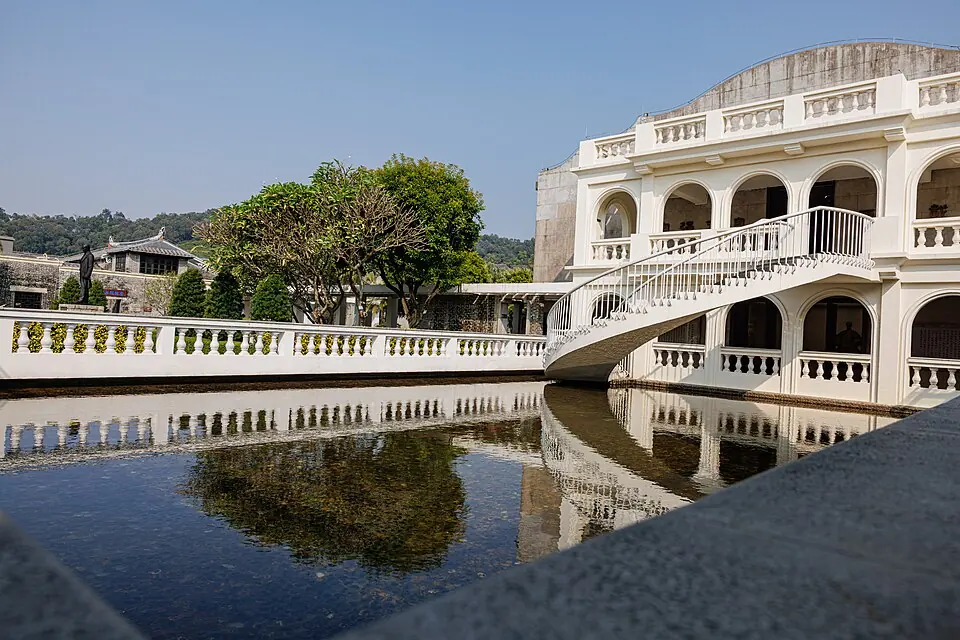
照片暂未加载，可继续阅读介绍。03新会
梁启超故居纪念馆
人物家风故居
位于新会的梁启超故居纪念馆是启超故里·小鸟天堂文化旅游区的一部分，可从故居与展览认识梁启超及其家风。
- 行程搭配
- 新会一日线的文化一站
这一带，尝一口什么 ＋
出发提示与资料来源
编辑建议 · 与小鸟天堂、陈皮村安排在同一天；给阅读展览留时间，比只拍门口更有收获。
行前确认 · 出行前核对开馆及临时闭馆公告；旧攻略的周一闭馆规则不应代替当日通知。
摄影/供图：Dinkun Chen · 原照片 ↗ · CC BY-SA 4.0 ↗。等比缩小、WebP压缩；网页展示可能裁切。衍生照片沿用所列许可。照片记录拍摄时的面貌。
 照片暂未加载，可继续阅读介绍。
照片暂未加载，可继续阅读介绍。04新会
小鸟天堂
古榕湿地观鸟
以古榕和鸟类生态闻名的国家湿地公园，与巴金《鸟的天堂》有联系；陆路游览和水路游船是不同体验。
- 行程搭配
- 新会一日线的自然一站
这一带，尝一口什么 ＋
出发提示与资料来源
编辑建议 · 喜欢自然与亲子观察的游客可优先选这里；带望远镜并保持安静，看到鸟群的数量与状态随时节、天气而变。
行前确认 · 确认门票是否含船票、当日游船是否运行；营业时间曾于2026年7月调整，查景区公告。
摄影/供图：Memes · 原照片 ↗ · CC BY-SA 3.0 ↗。等比缩小、WebP压缩；网页展示可能裁切。衍生照片沿用所列许可。照片记录拍摄时的面貌。
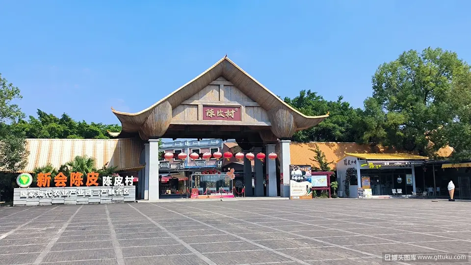
照片暂未加载，可继续阅读介绍。05新会
新会陈皮村
陈皮文化体验手信
集陈皮产业、文化体验、餐饮与商品交易于一体的商业文化综合体，地址为新会区银湖大道东9号。
- 行程搭配
- 与故居、小鸟天堂串联
这一带，尝一口什么 ＋
出发提示与资料来源
编辑建议 · 当作认识陈皮、喝茶和选手信的一站；先看年份、产地与标识，再按用途少量购买。
行前确认 · 陈皮村不是所有店铺统一价的景区，商品与体验项目各自收费。
摄影/供图：yemajun（野马君） · 原照片 ↗ · 罐头图库页面自述免费使用条件；非CC许可 ↗。仅等比缩小与WebP转换，保留完整画面及原水印。来源页发布于2024年，拍摄时间未注明。
照片暂未加载，可继续阅读介绍。 自力村碉楼与田园 · 2017年实景06开平
自力村碉楼群
世界遗产田园建筑
位于开平市塘口镇，是开平碉楼与村落世界文化遗产的组成地之一，碉楼、居庐与田园构成独特景观。
- 行程搭配
- 开平一日线的白天主站
这一带，尝一口什么 ＋
出发提示与资料来源
编辑建议 · 想看“田野中的碉楼”，优先选自力村；同一天还去赤坎时，别再把所有碉楼片区都塞进路线。
行前确认 · 购票时分清自力村、立园、马降龙的单点票与联票；开放建筑以现场安排为准。
摄影/供图：xiquinhosilva · 原照片 ↗ · CC BY 2.0 ↗。等比缩小、WebP压缩；网页展示可能裁切。衍生照片沿用所列许可。照片记录拍摄时的面貌。
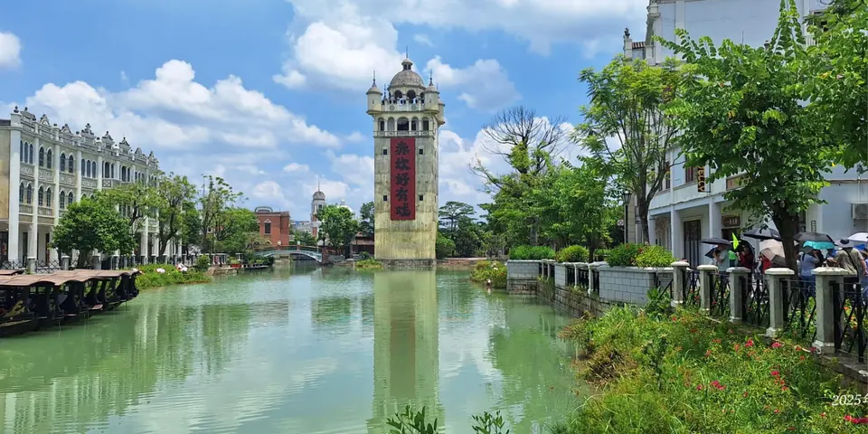
照片暂未加载，可继续阅读介绍。07开平
赤坎华侨古镇
骑楼夜景演艺
开平赤坎的华侨文化旅游度假区，以骑楼街区、潭江沿岸景观与演艺体验见长。导航可搜索“赤坎·广东华侨国际旅游度假区”。
- 行程搭配
- 开平线下午至晚间
这一带，尝一口什么 ＋
出发提示与资料来源
编辑建议 · 与自力村搭配时，把古镇放在下午至晚间，并事先确认夜游后的返程交通。
行前确认 · 查当日节目单及剧场预约方式；节日烟花、演出数量并非每天保证。注意这里不是湛江赤坎老街。
摄影/供图：Hoo XWang Longmand · 原照片 ↗ · CC0 1.0 ↗。等比缩小、WebP压缩；网页展示可能裁切。衍生照片沿用所列许可。照片记录拍摄时的面貌。
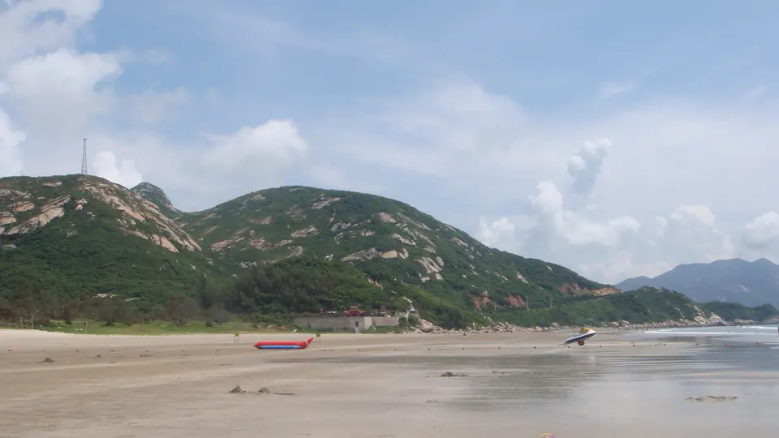
照片暂未加载，可继续阅读介绍。08台山
上川岛 / 下川岛
海岛海滩轮渡
两座不同海岛均可经台山山咀港乘船前往，上川岛有飞沙滩，下川岛有海滨与椰林景观。
- 行程搭配
- 另开海岛行程
这一带，尝一口什么 ＋
出发提示与资料来源
编辑建议 · 先选一座岛，再安排独立的一晚行程；首次周末游，不建议与江门老城、新会、开平全部拼在两天内。
行前确认 · 出发前查天气、当日航班与回程船票；岛上接驳也需留时间，航班以官方公告为准。
摄影/供图：罗布泊 · 原照片 ↗ · CC BY 3.0 ↗。等比缩小、WebP压缩；网页展示可能裁切。衍生照片沿用所列许可。照片记录拍摄时的面貌。
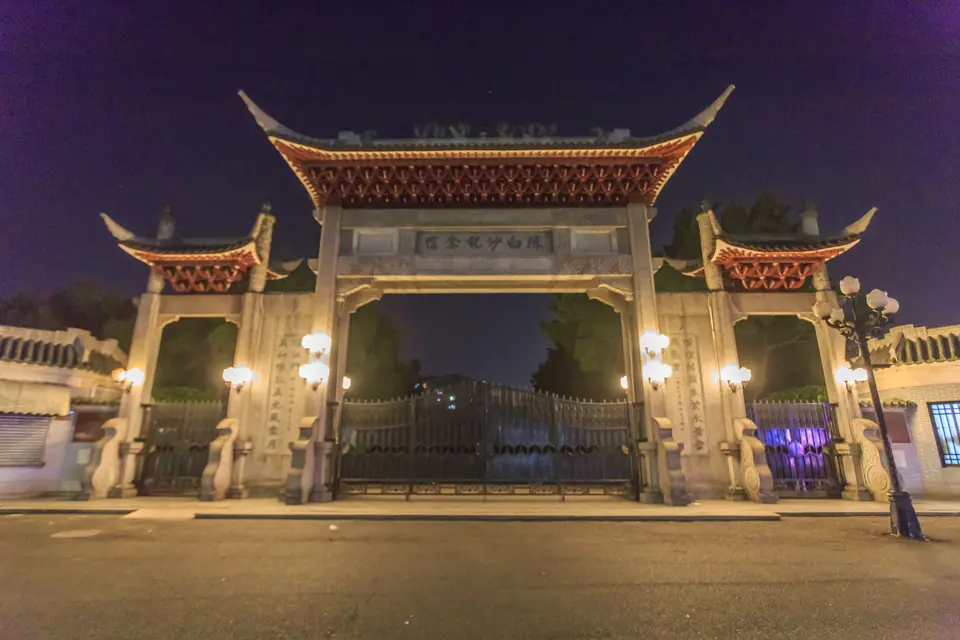
照片暂未加载，可继续阅读介绍。09蓬江
陈白沙纪念馆
古建理学人物
位于白沙大道西37号，以陈白沙祠为重要载体，介绍明代思想家、教育家陈献章与江门学派。
- 行程搭配
- 蓬江人文加站
这一带，尝一口什么 ＋
出发提示与资料来源
编辑建议 · 喜欢人文的游客可从老城行程中拨出一站，细看牌楼、庭院与陈列；它和陈少白故居是不同地点。
行前确认 · 出发前查看江门市博物馆的场馆开放、预约及临时调整通知。
摄影/供图：Zhangzhugang · 原照片 ↗ · CC BY-SA 4.0 ↗。等比缩小、WebP压缩；网页展示可能裁切。衍生照片沿用所列许可。照片记录拍摄时的面貌。
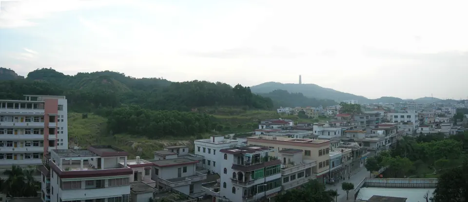
照片暂未加载，可继续阅读介绍。10江海
白水带 · 横坑彩虹村
公园彩虹村亲子
白水带风景区与横坑彩虹村位于江海区，官方休闲线路将两者串联；周边还有儿童公园与缤纷乐园。
- 行程搭配
- 江海户外半天
这一带，尝一口什么 ＋
出发提示与资料来源
编辑建议 · 想从老城换到户外，可选白水带散步，再到彩虹村一带停留；带小朋友时少排跨区景点。
行前确认 · 风景区、儿童公园、缤纷乐园并非同一项目，分别核对开放安排；旧报道中的夜市与夜场不代表每天都有。
摄影/供图：luchangjiang~鲁昌江 · 原照片 ↗ · CC BY-SA 3.0 ↗。等比缩小、WebP压缩；网页展示可能裁切。衍生照片沿用所列许可。原图于2009-12-27上传，未确认拍摄日期；并非横坑彩虹村现貌。
 照片暂未加载，可继续阅读介绍。
照片暂未加载，可继续阅读介绍。11江海
陈少白故居
故居园林近代史
位于江海区外海街道南华里1号，白园与莎萝坪隔河相望，由白桥连接，保留近代故居与庭园景观。
- 行程搭配
- 外海人文一站
这一带，尝一口什么 ＋
出发提示与资料来源
编辑建议 · 先读人物介绍，再看白桥与院落；可把外海人文参观与外海面安排在同一趟。
行前确认 · 核对故居当日开放与预约安排，不默认所有建筑内部均可参观。
摄影/供图：摄影作者未注明；江门市文化广电旅游体育局公开发布 · 原照片 ↗ · 官方公开配图，未见开放许可 ↗。仅等比缩小与WebP转换，保留完整画面及原水印。原页为2026-09-02发布，未注明拍摄日期；照片仅作景观参考，不代表设施实时开放状况。
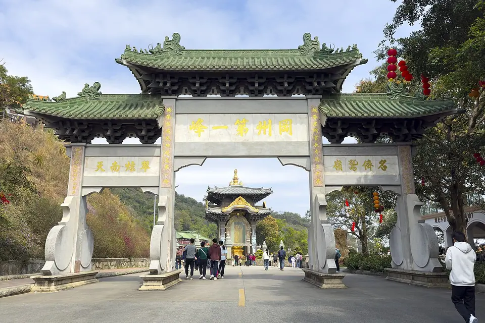
照片暂未加载，可继续阅读介绍。12新会
圭峰山 · 玉湖
森林湖畔徒步
新会圭峰山兼有森林、湖泊与古建景观，玉湖、玉台寺等属于圭峰山片区的不同游览点。
- 行程搭配
- 按体力选湖畔或登山
这一带，尝一口什么 ＋
出发提示与资料来源
编辑建议 · 轻松游可先选玉湖一带；想登山则单独留半天，别把湖畔散步和长距离登山当成同一强度。
行前确认 · 按具体入口核对路线、天气及防火封山通知，缆车或观光车是否运行以现场公告为准。
- 圭峰山 ↗江门市文化广电旅游体育局 · 2023-11-10
摄影/供图：Tim Wu · 原照片 ↗ · CC BY-SA 4.0 ↗。等比缩小、WebP压缩；网页展示可能裁切。衍生照片沿用所列许可。照片记录拍摄时的面貌。
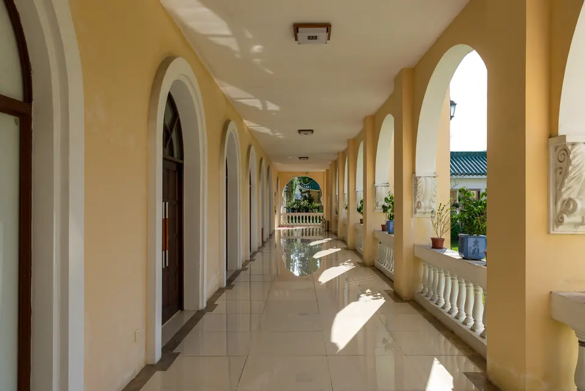
照片暂未加载，可继续阅读介绍。13开平
立园
华侨园林别墅建筑
位于开平塘口镇，是旅美华侨谢维立兴建的私家园林，将中国园林意趣与西式别墅建筑结合。
- 行程搭配
- 开平线的园林选项
这一带，尝一口什么 ＋
出发提示与资料来源
编辑建议 · 偏爱园林、回廊与建筑细节，可优先选立园；它与田园中的自力村风格不同，可按兴趣取舍。
行前确认 · 确认所购票包含哪些片区、是否有预约要求；不要把立园票当成全部碉楼景点通票。
摄影/供图：xiquinhosilva · 原照片 ↗ · CC BY 2.0 ↗。等比缩小、WebP压缩；网页展示可能裁切。衍生照片沿用所列许可。照片记录拍摄时的面貌。
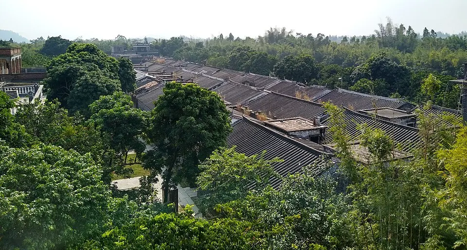
照片暂未加载，可继续阅读介绍。14开平
马降龙碉楼群
世界遗产竹林古村
位于开平百合镇，是开平碉楼与村落世界文化遗产的组成地之一，碉楼与村屋掩映在竹林中。
- 行程搭配
- 开平古村深度选项
这一带，尝一口什么 ＋
出发提示与资料来源
编辑建议 · 喜欢绿荫古村，可把它作为开平的主要停留点；与自力村、立园择一两处，留出村间接驳时间。
行前确认 · 核对票种、开放建筑与步道情况；雨后石板路可能湿滑，游览时留意脚下。
摄影/供图：Mx. Granger · 原照片 ↗ · CC0 ↗。等比缩小、WebP压缩；网页展示可能裁切。衍生照片沿用所列许可。照片记录拍摄时的面貌。
 照片暂未加载，可继续阅读介绍。
照片暂未加载，可继续阅读介绍。15台山
梅家大院 · 汀江圩
骑楼华侨建筑圩市
位于台山端芬镇大同河畔，由海内外乡亲集资兴建，骑楼围绕中央市场空地排列，体现侨乡圩市格局。
- 行程搭配
- 端芬古建半天的一站
这一带，尝一口什么 ＋
出发提示与资料来源
编辑建议 · 沿着骑楼看门窗与立面，再到中央空地观察整体布局；可与同镇海口埠组成一段侨乡文化行程。
行前确认 · 建筑内部、展馆和商户的开放各有安排，不把骑楼外观游览等同于所有房屋可进入。
摄影/供图：kenth31 · 原照片 ↗ · CC BY 2.0 ↗。等比缩小、WebP压缩；网页展示可能裁切。衍生照片沿用所列许可。照片记录拍摄时的面貌。
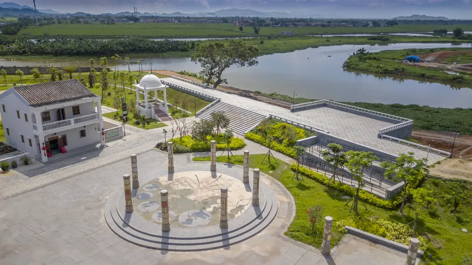
照片暂未加载，可继续阅读介绍。16台山
海口埠
银信古埠华侨历史
位于台山端芬镇，曾是五邑乡亲乘船出洋的重要口岸，与侨批、银信文化密切相关，保留古埠与旧街记忆。
- 行程搭配
- 与梅家大院同线
这一带，尝一口什么 ＋
出发提示与资料来源
编辑建议 · 适合接着梅家大院了解“从哪里出发、如何寄信回家”；阅读展陈，比只在码头拍一张照更有意思。
行前确认 · 展馆、讲解与活动需查当日安排；这里是历史文化游览地，不能当作上下川岛乘船码头。
摄影/供图：摄影者未注明；发布方：江门市文化广电旅游体育局 · 原照片 ↗ · 官方公开配图，未见开放许可 ↗。仅等比缩小与WebP转换，保留完整画面及原水印。来源页发布于2024年1月3日，拍摄时间未注明。
 照片暂未加载，可继续阅读介绍。
照片暂未加载，可继续阅读介绍。17鹤山
古劳水乡
水网石桥游船
位于鹤山古劳镇、西江岸边，鱼塘、水道、石桥与村落交织，形成岭南围墩水乡景观。
- 行程搭配
- 鹤山水乡半天
这一带，尝一口什么 ＋
出发提示与资料来源
编辑建议 · 把时间留给水边散步和观察村落；想乘船时，先选清楚游览片区与线路，再安排餐饮停留。
行前确认 · 古劳水乡范围较大，具体运营景区、村落与游船码头须分清；船票、班次及天气停航情况临行确认。
摄影/供图：Ballmacy · 原照片 ↗ · CC BY-SA 4.0 ↗。等比缩小、WebP压缩；网页展示可能裁切。衍生照片沿用所列许可。照片记录拍摄时的面貌。
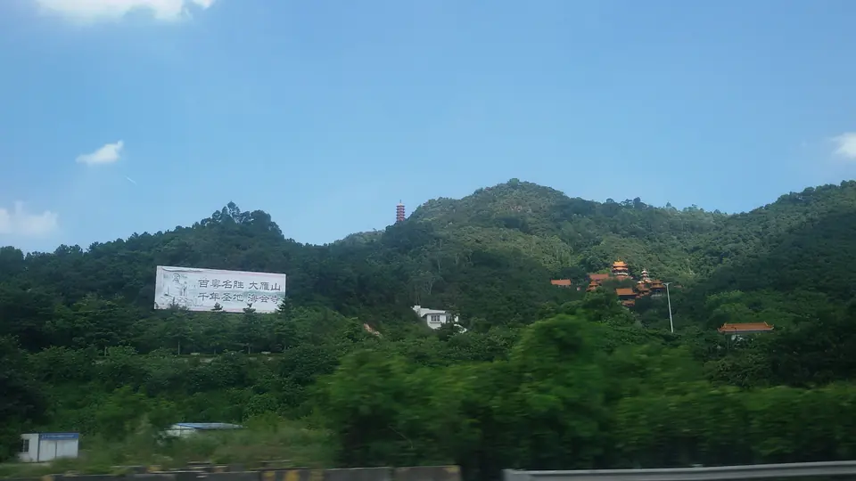
照片暂未加载，可继续阅读介绍。18鹤山
大雁山
登高西江森林
位于鹤山城区北部、濒临西江，有纪元塔、日月峰、山林湖景等游览点，可从高处眺望江岸风光。
- 行程搭配
- 鹤山登高半天
这一带，尝一口什么 ＋
出发提示与资料来源
编辑建议 · 喜欢登高可把大雁山作为鹤山主站；若再去古劳水乡，先评估体力，减少山上支线。
行前确认 · 有不同出入口，先定入口和返程接驳；核对防火管控、天气及观光接驳运营安排。
摄影/供图：PQ77wd · 原照片 ↗ · CC BY-SA 4.0 ↗。等比缩小、WebP压缩；网页展示可能裁切。衍生照片沿用所列许可。照片记录拍摄时的面貌。
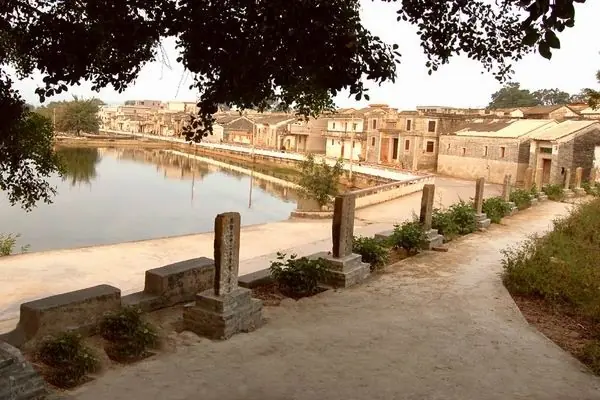
照片暂未加载，可继续阅读介绍。19恩平
歇马举人村
古村举人文化家风
位于恩平圣堂镇，是以科举与重教传统闻名的历史文化名村，村内保存举人碑、进士碑等文化遗存。
- 行程搭配
- 恩平文化半天
这一带，尝一口什么 ＋
出发提示与资料来源
编辑建议 · 适合对家风、教育和古村感兴趣的游客；慢看碑刻与村落肌理，也给仍在生活的居民留出空间。
行前确认 · 进入祠堂、展陈或参加研学讲解前，确认当天开放、预约与收费范围。
摄影/供图：摄影作者未注明；江门市文化广电旅游体育局公开发布 · 原照片 ↗ · 官方公开配图，未见开放许可 ↗。仅等比缩小与WebP转换，保留完整画面及原水印。原页为2026-09-02发布，未注明拍摄日期；照片仅作景观参考，不代表设施实时开放状况。
照片暂未加载，可继续阅读介绍。
恩平锦江温泉池区 · 官方实景参考图片来源：江门市文化广电旅游体育局20恩平
锦江温泉
温泉度假放松
位于恩平大田镇，是以温泉体验为特色的休闲目的地，官方介绍涵盖泡池与水上温泉项目。
- 行程搭配
- 恩平休闲或住一晚
这一带，尝一口什么 ＋
出发提示与资料来源
编辑建议 · 想放慢节奏，可在恩平文化游之外留一段温泉休闲时间；住一晚的安排比当天来回多地更从容。
行前确认 · 核对当天营业、泡池开放、住宿是否含温泉和儿童使用规则；不将旧项目列表视为全部实时开放。
- 锦江温泉 ↗江门市文化广电旅游体育局 · 2026-09-02
摄影/供图：摄影作者未注明；江门市文化广电旅游体育局公开发布 · 原照片 ↗ · 官方公开配图，未见开放许可 ↗。仅等比缩小与WebP转换，保留完整画面及原水印。原页为2026-09-02发布，未注明拍摄日期；照片仅作景观参考，不代表设施实时开放状况。
也听听，走过这里的人。
游客记录 · 携程攻略社区
启明里，适合怎样逛？
可读点评谈到侨屋、咖啡店与慢逛拍照。喜欢建筑和街巷的人，可留一段不赶路的时间。
作者：地瓜出门了、走遍天下XZ；点评日期：2025-10-04、2025-02-08。个人体验仅作参考，非本站实地测评。
读游客原文 ↗官方动态 · 江门文旅
小鸟天堂，先查当天安排。
景区在2026年7月调整过营业时间。出发前可在微信搜索“小鸟天堂景区”或“启超故里小鸟天堂文化旅游区”，核对开放与游船信息。
查看公告与官方账号 ↗出发前，再确认一次。
开放、票务、演出与船班会调整，请以景区当日公告为准。地图链接用于检索地点，具体入口与交通方式请在地图中确认。路线与停留安排是本站编辑建议。
旅行清单保存在当前浏览器，不会跨设备自动同步。旅途中看到的风景，也可以写进自己的江门明信片 →